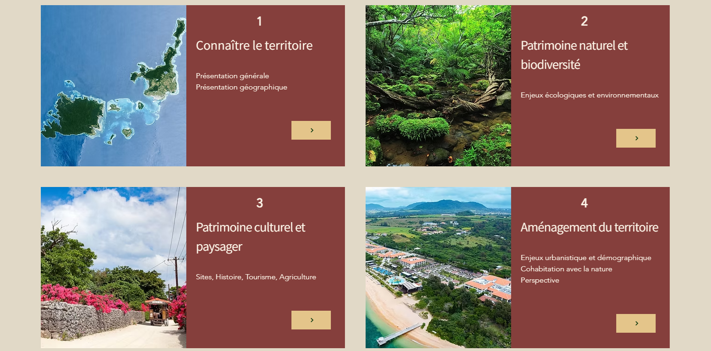

Observatoire du territore Parc National d'Iriomote-Ishigaki
sous Arcgis Online

1 - Jusqu'en mai 2026
Cartes interactives disponibles sous ArcGIS
2 - Après mai 2026
Cartes interactives non disponibles, capture d'écran fournie